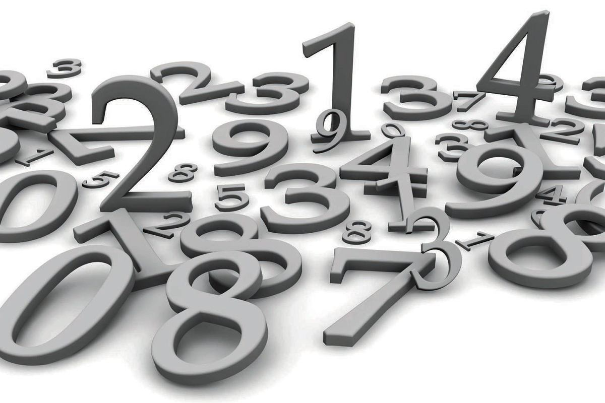

Matematyka Pieniędzy
Dlaczego pieniądze znikają? Odkryj odpowiedzi w nowoczesnym przewodniku po finansach.
Matematyka a pieniądze
Dlaczego pieniądze to problem matematyczny, a nie tylko ekonomiczny?
Pieniądze to problem matematyczny, ponieważ ich zarządzanie opiera się na liczbach, algorytmach, modelowaniu i statystyce (np. procent składany, analiza ryzyka, rachunek prawdopodobieństwa), a nie tylko na ich wartości wymiennej (ekonomicznej); wymaga to matematyki finansowej, która opisuje zjawiska bogactwa, ale prawdziwe problemy często leżą w nierównościach, psychologii i systemach, które same w sobie są złożonymi problemami matematycznymi i logicznymi.
Emocje VS Liczby
"Emocje vs liczby" to zestawienie dwóch światów – subiektywnego, pełnego uczuć i intuicji, z obiektywnym, logicznym i mierzalnym wymiarem matematyki; chociaż wydają się sprzeczne, współczesne podejścia łączą je w edukacji (jak „matemocje”) i psychologii, gdzie liczenie może działać uspokajająco, a matematyka może być narzędziem do rozumienia i regulowania stanów emocjonalnych, pomagając w rozwoju inteligencji emocjonalnej, zwłaszcza u dzieci.
Cel tego projektu
Celem tego projektu jest ukazanie dlaczego matematyka jest bardzo ważna podczas podejmowania decyzji biznesowych, na co warto uważać i w co warto inwestować.
Podstawowe pojęcia finansowe
Procent i procent składany
Procent - część całości.
Procent składany - sposób oprocentowania wkładu pieniężnego polegający na tym, że odsetki za dany okres oprocentowania są doliczane do wkładu (podlegają kapitalizacji) i w ten sposób „składają się” na zysk wypracowywany w okresie następnym.
Rata, kapitał i odsetki
Rata - regularna płatność części długu (kapitału) wraz z odsetkami, spłacana w ustalonych odstępach czasu (zwykle miesięcznie) aż do całkowitej spłaty kredytu, przy czym istnieją raty stałe (annuitetowe) i malejące.
Kapitał - zasób, który służy do generowania wartości i rozwoju, występujący w formie pieniędzy, środków produkcji (kapitał rzeczowy), wiedzy (kapitał ludzki) oraz praw własności (kapitał intelektualny).
Odsetki – koszt, naliczany za używanie pożyczonego kapitału jego właścicielowi.
Inflacja
Inflacja – proces trwalego wzrostu ogólnego poziomu cen w gospodarce. Skutkiem tego procesu jest spadek siły nabywczej pieniądza krajowego.
Wartość pieniądza w czasie
Wartość pieniądza w czasie (TVM) to fundamentalna koncepcja finansowa, która mówi, że złotówka dziś jest warta więcej niż ta sama złotówka w przyszłości. Wynika to z inflacji (spadek siły nabywczej), możliwości inwestowania pieniędzy i generowania zysku (kapitalizacja) oraz ryzyka związanego z odroczeniem otrzymania pieniędzy.
Dlaczego kredyt zawsze jest droższy niż myślisz?
Mechanizm kredytu
Mechanizm kredytu to umowa, w której bank udostępnia pieniądze na określony czas, a kredytobiorca zobowiązuje się do ich zwrotu wraz z odsetkami i ewentualnymi prowizjami. Kluczowe elementy to oprocentowanie, harmonogram spłat, cel kredytu, okres spłaty, prowizje i zabezpieczenia.

Odsetki proste a składane
Odsetki Proste to metoda obliczania odsetek od kwoty początkowej (kapitału), bez doliczania do niej naliczonych wcześniej odsetek.
Odsetki Składane (złożone) to mechanizm finansowy, w którym naliczone odsetki dodawane są do kapitału początkowego, a w następnym okresie oprocentowanie jest już naliczane od tej nowej, wyższej kwoty.
Harmonogram spłat
Harmonogram Spłat - kluczowy dokument, który szczegółowo określa, kiedy i w jakiej kwocie musisz spłacać poszczególne raty, dzieląc je na część kapitałową i odsetkową.
Całkowity koszt kredytu
Całkowity koszt kredytu to suma wszystkich opłat i kosztów, które kredytobiorca musi ponieść w związku z umową kredytową (odsetki, prowizje, ubezpieczenia, podatki).
Przykład "mała rata - duży koszt"
Leasing samochodu, zwłaszcza z niską wpłatą początkową i długim okresem spłaty, gdzie duża część raty to odsetki, a nie kapitał, co zwiększa całkowity koszt finansowania, mimo niskich miesięcznych opłat.